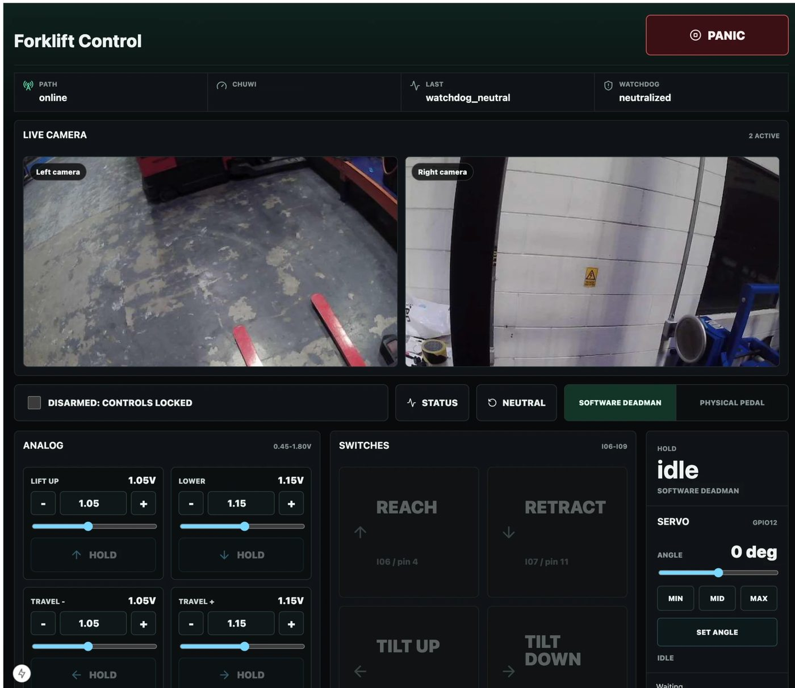
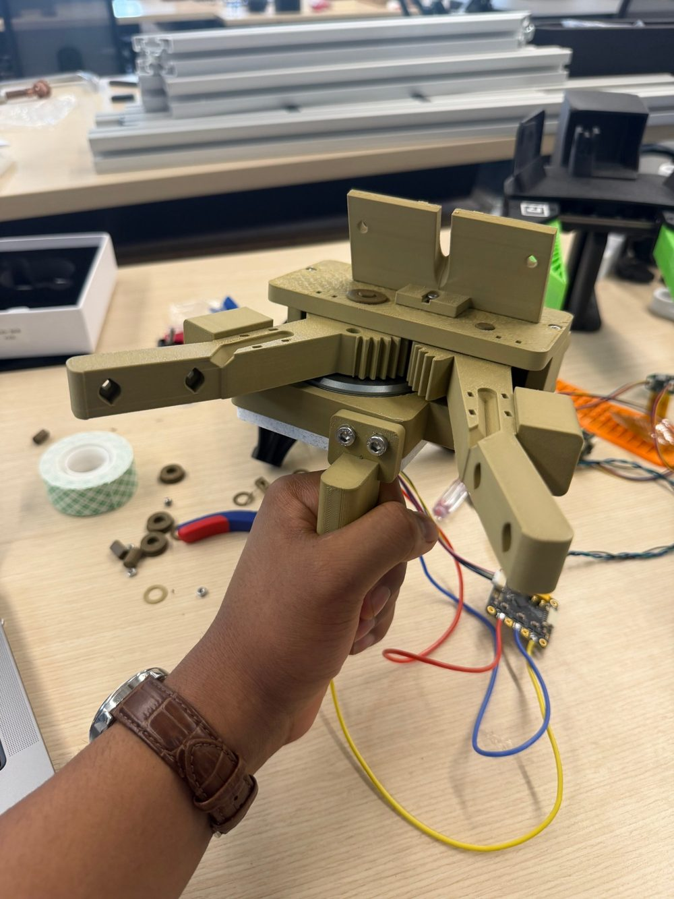
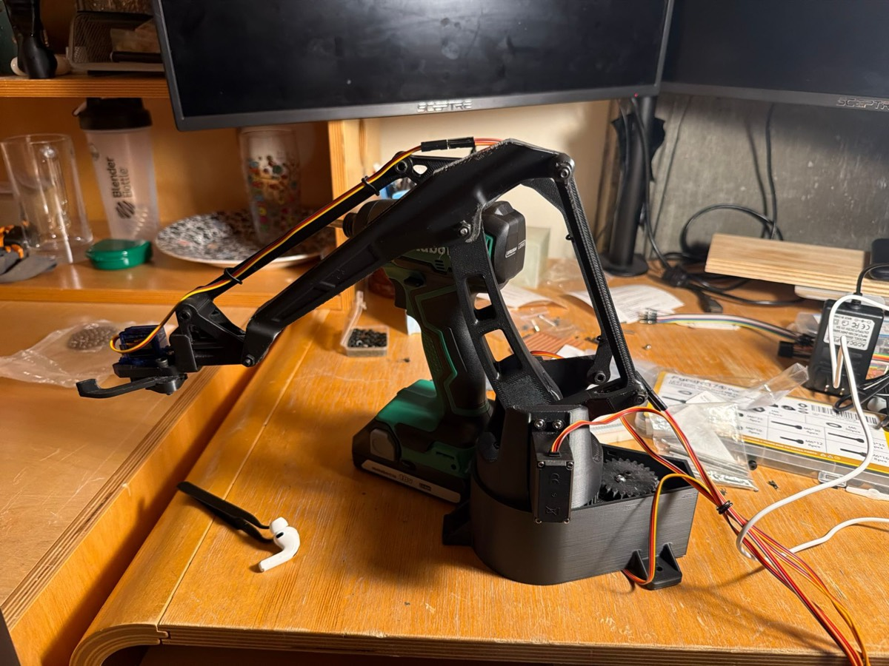
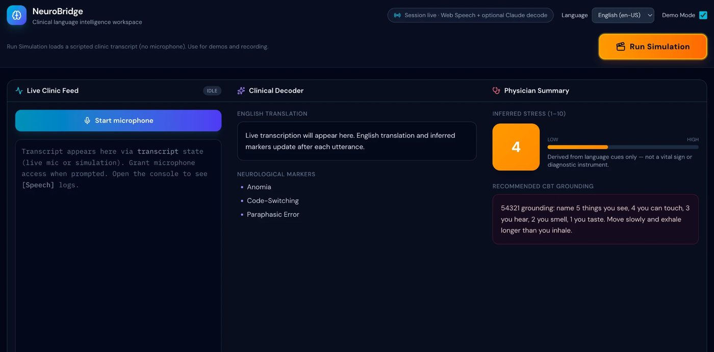
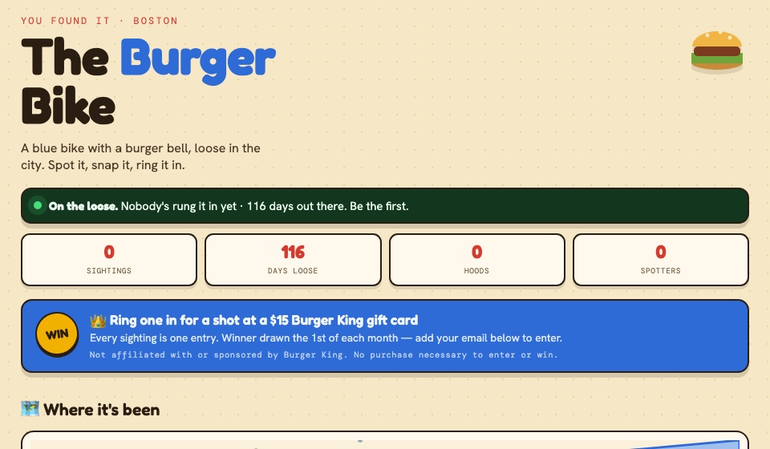

Projects
Things I've built.
Robotics & Hardware

Forklift Teleoperation Retrofit
Remote control of a Raymond reach truck in Mexico City from Massachusetts without touching its controller. I designed a 2-layer control board with a watchdog-gated deadman relay, fail-safe relays, and isolated I/O, plus a multi-camera 1080p video pipeline and a heartbeat that stops the truck if the link degrades.
Big Crane
A soft-robotics crane in the d'Arbeloff Lab. One Arduino Mega runs 5 closed-loop brushless motor channels and 6 pneumatic regulators at 100 Hz. Dual-camera vision tracks the vine-robot tip, and online Jacobian estimation steers it.

Tactile Gripper
A two-finger tactile gripper I'm building for the robot arm in MIT CSAIL's Improbable AI Lab. It will use compressive sensing to read a large tactile array, and its firmware will stream the touch data in a format ready for training manipulation policies from human demonstrations.

EEZYbotARM MK2
A 4-axis servo-driven robot arm with gripper, built and iterated on my own printers.
Parametric CAD Designs
Code-defined printable parts: a blow-dryer diffuser, a snap-lid watercolor palette, and a tin organizer insert.
Software

NeuroBridge
A clinical language workspace for immigrant dementia care. It transcribes live speech in English, Spanish, or Bengali and uses Claude to produce an English translation, flag dementia markers like anomia and code-switching, and infer a 1–10 stress score. A hard-coded crisis override tells clinicians to switch to a human protocol when distress is high. Code

Burgered Bike
A public Boston art scavenger hunt with a live sighting map, badges, and QR-code submissions. Visit site · Code
Text-Based AI Assistant
An assistant that manages my calendar, to-dos, reminders, and syllabus deadlines over text message.
Learning
Machine Learning Self-Study
Trained a CIFAR-10 classifier on an Apple GPU and working through micrograd and the robot-learning papers from RT-1 to OpenVLA.